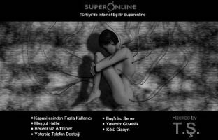

Başından beri internette insanların gerçek kimliğini gizlemesine karşı çıkmışımdır. Bu yüzden takma ad kullanmayıp, hep ad soyadımı veya baş harflerini kullanmayı tercih etmişimdir. Teknik anlamda yapılabilecekleri bildiğimden, takma ad kullanmanın kimseyi kurtaramayacağının farkında olmamın da şüphesiz bu seçimimde katkısı vardı. Bugün artık herkesin Facebook, Twitter gibi sosyal medya sitelerinde kendi adı soyadıyla var olmaya bayıldığına bakarsak, zaman beni pek de haksız çıkarmış sayılmaz.
Sohbet sunucusundan atılmış olmam egomda ciddi bir yara açmıştı. Kendimi oyuncağı zorla elinden alınmış bir çocuk gibi hissediyordum. Bunu bana nasıl yapabilirlerdi? Günlerce düşündükten sonra nasıl intikam alacağıma karar verdim. Elbette tek bildiğim yolla... Hack edecektim! Ama akla ilk gelenin aksine beni sohbet sunucusundan atan sistem yöneticisini değil, Superonline’ı.
O zamanki mantığıma göre sistem yöneticisini hack etsem bu durumu sadece kendisi ile çevresindeki birkaç kişi bilecek, üç beş gün kısır bir çevrede konuşulup unutulacak, belki de etrafa hiç belli etmeden örtbas edilecekti. Ama Superonline’ı hack edersem bunu milyonlarca insan öğrenecek, yıllarca dillerden düşmeyecekti. Üstelik bu, o sistem yöneticilerinin sohbet sunucusunu koruyamadıkları gibi diğer sistemleri de koruyamadıkları anlamına gelecekti.
Bu motivasyonla yola çıkıp Superonline sistemlerini incelemeye başladım. Alan adı sunucularına saldırıp kısa süreli kesintiler elde ediyorken bir yandan başka güvenlik açıklarını araştırıyordum. Fakat istediğim o büyük etkiyi getirecek saldırı biçiminde henüz karar kılmamıştım ve bu biraz zaman alacak gibiydi.
Bu yönde çalışmalarıma devam ederken amacıma ulaşmak için o dönemlerin tek alan adı kayıt firması olan Network Solutions’ın sistemlerinde keşfettiğim açığı kullanmaya karar verdim. Bir süredir denemeler yapıyordum, üstelik bu denemelerim kısmen de başarıya ulaşmıştı. Netsol’un kullandığı e-posta sunucularından birine bağlanıp, alan adının bilgilerini içeren bir şablon formu dolduruyordum. Kendi sunucuları üzerinden bir e-posta adresine gönderimde bulunuyordum. Bu e-posta adresi, gelen formu otomatik olarak işleyerek alan adının üzerinde değişiklik yapmaya izin veriyordu. Ek bir şifre bulunsa bile işleme koyuyor, hiçbir yetkilendirme olmadan bu değişikliği yapıyordu.
Planım hazırdı. Yurtdışında bir sunucudan yer kiraladım, sloganlar eşliğinde hazırladığım grafiği oraya yerleştirdim. Gerekli sunucular üzerinden bağlanıp işlemleri yaptım. Saatler geçmesine rağmen bir şey olmadığı için emin olamayarak bunu aralıklarla, gün aşırı tekrarladım.
Heyecanla bekliyordum ama hiçbir değişiklik olmamıştı. Alan adının dns adresleri halen Superonline olarak gözüküyordu. Artık bu saldırı tekniğinden umudumu kesmiş, başka yollar araştırıyordum. Sabahlara kadar bilgisayar başında araştırıp, notlar alırken yine öğle saatlerine kadar uyuyordum.
Ertesi gün uyandığımda evde elektriklerin kesik olduğunu fark ettim. Dışarıya baktığımda elektrik kablolarının indirildiğini, hepsinin sökülüp yenilendiğini gördüm. Elektrik olmadan ne yapılabilir ki şu hayatta diye düşünürken kısa bir süre sonra cep telefonum çalmaya başladı. Telefondaki arkadaşım heyecanla “Abi sen ne yaptın ya! Manyaksın sen, şu an superonline.com adresine giriyorum ‘hacked by T.Ş.’ yazıyor!” diyordu. Bir anda sıcak bastı. Pek tarif edemediğim duygular içerisindeydim. İçimdeki sinir, nefret yok olmuş, yerine başarıyla sonuçlanmış bir işin verdiği tatmin gelmişti.
Böyle kritik durumlarda sizi arayan iki çeşit arkadaş olur. Biri “Abi harikasın hack ettin adamları!” derken, diğer tür “Abi ne yaptın? Bitirecekler seni!” der. İnsanı sıkıntıya sokan ise her zaman ikinci sınıfa dahil olan arkadaş türüdür.
Superonline’ın sahibi Mehmet Emin Karamehmet’ti. Milyarlarca dolarlık bir servete hükmeden bu adam istese beni saniyesinde ortadan kaldırabilecek güce sahipti. Tam binlerce düşünceye dalmış biçimde kafamı toparlamaya çalışırken ev telefonu çaldı. Annem telefonu açtı ve beni aradıklarını söyledi.

Superonline internet sitesine giren kullanıcıların karşılaştığı görsel (1999).
Ahizeyi elime aldığımda karşımdaki kişi “Tamer naber? Nasıl gidiyor bakalım?” diye sordu. Duyduğum sesi kimseye benzetememiştim. Tanıdığım biri olamazdı ama sanki beni tanıyormuş gibi samimiyetle konuşuyordu. “Kusura bakmayın tanıyamadım?” dediğimde “Yakında tanırsın...” diyerek telefonu suratıma kapattı...
Bir anda biraz daha terlemeye başladım. 18 yaşında bir gençtim. Daha önce hack yüzünden işten kovulmak gibi sonuçlarla karşı karşıya gelsem de bilgisayar başında kalkıştığım hareketlerin sonuçlarını yine de tam olarak kestiremiyordum. Elektrikleri kesik, sessiz, sakin odamda düşüncelere dalarak beklemeye başladım. Olasılıkları kafamda tartmaktan canım sıkılmıştı. Dışarıya çıkarak bir arkadaşımın şirketine uğradım. Kendimi rahatlatmak, kafamı dağıtmak için bir şeylerle uğraşırken cep telefonum çaldı. Telefonda ciddi olduğu kadar sıkıntılı bir ses vardı. Bana “Tamer ben Fazıl. Superonline genel müdür yardımcısıyım. Şu anda seni Superonline ve Çukurova Holding üst düzey yöneticileri konferans görüşmeyle dinliyorlar. Birkaç soru sormak istiyorum” diyordu.